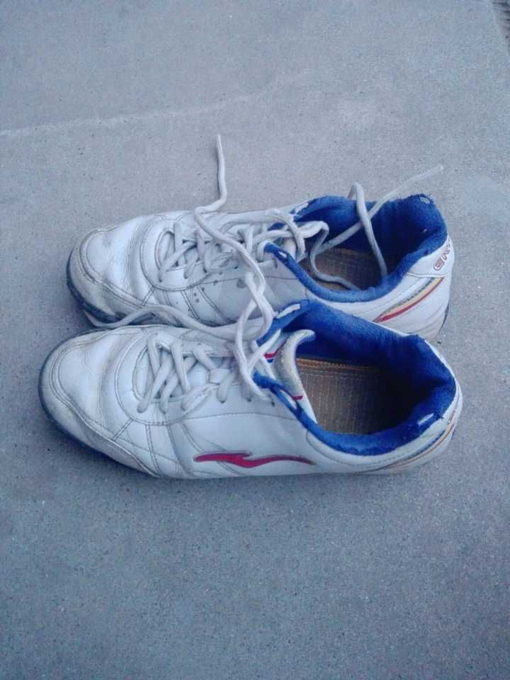

以前，觉得自己是因为单纯喜欢足球这项运动，所以才会一直坚持去踢。
后来，逐渐处于“半退役”状态时，才体会到“兄弟”一词于我的意义。
高一开始接触足球，然而并没有一见钟情，只是当做普通的体育课去完成。
那年巴西世界杯，用手机看文字直播，糟心极了。也说不清喜欢哪个队，只知道德国和西班牙很厉害。
高二下学期，偶然的机会，从乒乓石台偷偷遛到球场，落日的余晖下，打进一球，彻底点燃了我对足球的热情，从此一发不可收拾，结下了难解之缘。 曾在滂沱的大雨中，注视着足球，卷带着雨水，缓缓窜进球门，我们相佣而呼，忘情庆祝；也曾在似火的的骄阳里，与汗水共舞，祈求一丝微风，带走难耐的酷热……
念念不忘那场7:1的巅峰，横扫高三四班的荣耀。上场前的不自信，场边的呐喊助威，场上的互相呼应，整个班级凝聚得令人生畏，我们不惜体力地跑动围抢，仿佛是用生命在战斗。
进球的场景已经略显模糊，只记得中场有一脚逆天的左脚吊射，让所有人瞠目；
我通过一粒点球上演了“职业生涯”第一次帽子戏法，7:0。
老师在最后时刻接门将长传，禁区角左脚凌空爆射破门，一脚“天外飞仙”将比分定格为了7:1，那粒进球被我们啧啧称道了整整一年，直至毕业以后。
比赛结束以后，我很激动，前所未有的激动，很想去拥抱兄弟们，感谢他们的努力。之后的生物课根本没怎么听课，脑子里全是胜利的喜悦。 那些简单而又纯粹的岁月里，买不起专业的球鞋，也没有华丽的配合，比赛中踢出一个简单的二过一都会回味很久很久。突破、盘带、射门，都没有系统地训练，我们有的，只是一腔热血。  旺盛的精力至今想来都很可怕，我们可以不吃不喝，从中午12点一直踢到晚上9点。传球、射门、分边，下底传中、突破过人，浪费了好机会之后，也会“开飞机”谢罪，丝毫感受不到疲倦。
一年多的时间里，玩坏了好几个球，足球几乎是那个时候最爱的放松活动。
很难形容喜爱到了什么程度，晚上睡觉都在想着该怎么传球。早操后最喜欢讨论的不是数理题目，而是国际足坛谁最厉害。
也曾通宵去看西班牙国家德比，三个人挤在一张床上，巴萨2:1赢了皇马，感慨苏亚雷斯的强大以及布拉沃的神勇，第二天早起昏昏沉沉去吃早饭的样子还历历在目。
总是在班级的报纸上寻找关于足球的新闻，仅有的几本足球杂志不知道翻了多少遍，成为了午饭时唯一的消遣。
后来无数次想要重拾那感觉，却再也找不回来了。不论是重回高中的球场，亦或是穿上高端的球鞋，还是拥有高水平的队友…… 后来快要毕业之际，我们买了四件皇马球衣，两黑两白，甚是吸引目光。
我们，也曾少年！
唉！这tmd的青春啊！
不由得又想起了之前的一个故事
十多年前，我读高中，同桌是个安静漂亮的姑娘，很是喜欢我，但也许是启蒙过晚的原因，我对她熟视无睹，我唯一的爱好就是踢球，而她唯一的爱好就是看我踢球......
我当时非常喜欢德国队，不厌其烦地向她灌输金色轰炸机如何厉害，哈斯勒如何牛逼，虽然她听不懂，但还是安安静静地看着我，眼含笑意。
时光荏苒，当德国队折戟法国世界杯的那个夏天，我高三已经快毕业了，临别那天，我送了一张克林斯曼的明信片给她，她满心欢喜，毕竟三年来我第一次送她东西......
慢慢的，克林斯曼从球员变成了教练，我大学毕业、工作、应酬，整日在推杯换盏中虚与委蛇，不知不觉间很多人和事情都已淡忘，只有看球的时候偶尔也会想起当年同桌的她。
去年春节回家，无事可做，决定去踢踢球，结果没跑几步就气喘吁吁，索性坐在场边看其他人踢，看了一会儿，视线被一个身穿德国队18号球衣的孩子吸引了，感觉这孩子盘带、传球很有章法，趁那孩子休息的时候，我主动过去和他攀谈起来。
“踢得不错嘛，几岁了？”
“8岁了。”
“踢这么好，平时没少踢吧？”
“平时没怎么踢，我爸爸不喜欢我踢球，说踢球没用。”
我一愣，顿时接不上话，气氛显得有些沉闷，我换了个话题。
“你喜欢德国队？”
“嗯。”
“那你最喜欢德国队哪个球星？”
“克林斯曼。”他不假思索地回答道。
“嘿，你也知道克林斯曼啊？”我顿时来了兴致。
他骄傲地回答：“当然了，我妈妈有一张他的明信片，她说克林斯曼是金色轰炸机......”
写于2018年1月20日，知乎